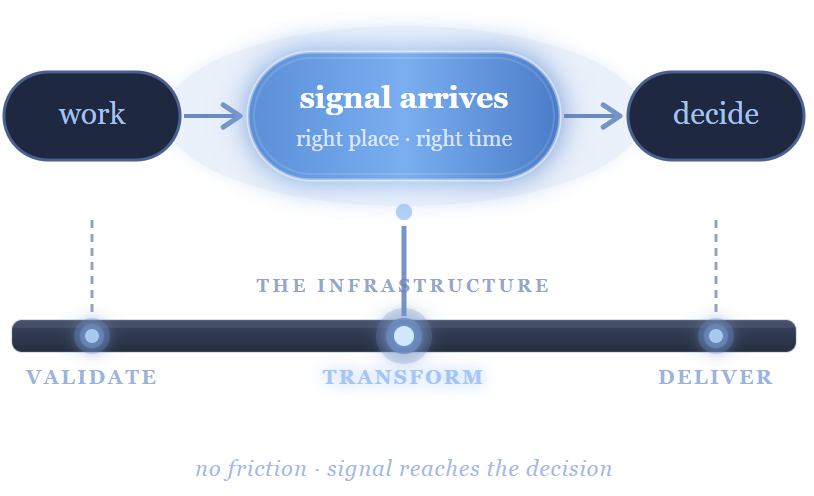

01
Validate
Is the data trustworthy?
Schema enforcement, data contracts, automated quality checks. In institutional finance, this is non-negotiable — bad data costs real money. Most data teams treat it as optional.
Most firms have the data. Nobody built the system that connects it to decisions. That gap is what I spent 19 years working inside — and what I now build systems to close.
Here's what that looks like applied to modern data infrastructure.

Most organizations don't have a data problem. They have a decision infrastructure problem. The data exists. The relationships between it are knowable. But nobody built the system that connects them — because doing that requires someone who understands both what questions need to be asked and how to engineer the pipeline that answers them automatically.
That is the gap I spent 19 years working inside. And it is the gap I now build systems to close.
Three stages. Each one is an engineering problem. Most organizations are missing all three.
Is the data trustworthy?
Schema enforcement, data contracts, automated quality checks. In institutional finance, this is non-negotiable — bad data costs real money. Most data teams treat it as optional.
Does it answer the right question?
Business logic encoded in the pipeline, not rebuilt manually every time. The model that knows what a portfolio manager actually needs to act — not just what the data contains.
Does it arrive where decisions happen?
Signal reaches the decision maker inside their workflow — not in a separate dashboard they have to remember to open. Adoption lives or dies at this stage.
Here's the work behind the positioning.
Led end-to-end quantitative research at one of Chicago's leading investment managers — translating investment questions into data sourcing strategies, factor development, backtesting frameworks, and production-ready analytics used in daily portfolio decisions.
In this environment, bad data costs real money. Every system I built was designed to be auditable, reliable, and decision-ready — not just functional.
Designed and maintained production pipelines with automated quality checks, alerting, versioning, and full audit trails — supporting daily investment workflows in a regulated environment where data integrity is non-negotiable.
Established data contracts and lifecycle management standards that made analytical outputs auditable, reproducible, and scalable across the research team.
Designed dashboards and reporting frameworks that translated quantitative research into clear, actionable outputs for portfolio managers — used in daily investment reviews and strategy discussions.
The key distinction: these were not reporting tools. They were decision tools — designed around what a portfolio manager needed to know to act, not just what was available to show.
Evaluated and onboarded ESG datasets — assessing vendor coverage, data quality, update frequency, and signal relevance before committing to production in quantitative models.
This work required understanding both the domain problem — what ESG signal actually tells a portfolio manager — and the infrastructure problem — how to ingest, validate, and version a vendor dataset reliably.
Formalizing 19 years of production data discipline with modern engineering tooling — Python, FastAPI, PostgreSQL, Docker, React, REST APIs, and cloud infrastructure.
The transition is not from analyst to engineer. It is from engineer who built within one domain to engineer who can build across any domain that has the same underlying problem.
Collaborated with portfolio managers, data scientists, engineering teams, and senior leadership to align analytics with investment workflows — operating as the translation layer between what the business needed and what the data could provide.
This is the core FDE skill — embedded in the business, understanding the decision, building the system that serves it. I did this for 19 years before the title existed.